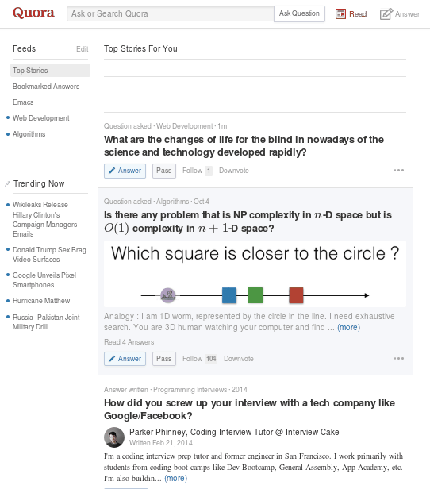

purify quora.com with vanilla javascript
quora.com with vanilla javascript :en:javascript:quora:
"Smart" http://quora.com always recommends the stories I hate to see.
So here is my way to toggle the stories display on Chrome and Firefox.
Step 1, create a new bookmark with below link,
javascript:a=Array.from(document.getElementsByClassName("AnswerStoryToggleModal"));a.forEach(function(e){e.style.display=a[a.length-1].style.display==='none'?'block':'none';});
Step 2, DONE! You only need click the bookmark to hide or show the stories when visiting http://quora.com.
Here is the original vanilla javascript,
var a = Array.from(document.getElementsByClassName("AnswerStoryToggleModal"));
a.forEach(function (e) {
// check 'display' of the last item in story feed before toggling
e.style.display = a[a.length - 1].style.display === 'none' ? 'block' : 'none';
});
Screenshot:

山东韭菜猪肉虾仁水餃
:zh:cuisine:dumpling:
- 韭菜一斤(8把)
- 虾仁适量
- 八角一个
- 猪肉适量
- 饺子皮90片
流程
- 韭菜切碎
- 虾仁切成小块
- 猪肉冷冻后切丁
- 葱姜切末
- 八角磨成粉(或十三香或五香粉),可以用捣蒜的工具捣尽量碎
- 以上材料混合,加鲜味酱油,加菜油(馅不干且有香味),加盐适量,可再加适量麻油
- 包饺子时面皮涂点水,对折用两个大拇指用力压扁饺子边
- 饺子底部粘生粉防止粘一起
- 熟后可用蒜末和醋调味
馅:

开吃:

湖南菜攸县香干
:zh:cuisine:
用料:
- 豆豉8粒
- 蒜瓣4片
- 生姜一片
- 辣椒4根
- 豆腐干6块
步骤:
- 姜蒜切好,姜切沫,蒜切片
- 蒜苗切斜段,青红椒各切圈
- 香干切片,斜着下刀更好看
- 锅中烧开水,水开后将香干片倒进去煮一分钟捞起控干水分备用
- 锅里放油,立刻放适量豆豉(dou chi)姜蒜辣椒炒香,蒜蓉微红色即可进入下一步
- 倒入香干,加生抽适量,老抽几滴上色,白糖少许提鲜,盐适量,耗油适量,最后放入蒜苗就起锅了
小结:
- 3分钟可以炒完
Emacs as C++ IDE, easy way
as C++ IDE, easy way :en:emacs:c:global:gtags:c:ide:
CREATED:
UPDATED:
This is a newbie friendly solution which works at Linux/OSX/Cygwin (should work at Windows too, but I don't develop at Windows).
Setup is minimum. Only GNU Global and two Emacs plugins are required:
- company for code completion
- emacs-helm-gtags or emacs-counsel-gtags for code navigation. I use emacs-counsel-gtags.
Here is the step to step guide.
I have two projects ~/proj1 and ~/proj2.
Both projects use files from read only directories /usr/include and /usr/src/linux/include.
We create a new directory ~/obj to store index files created by GNU Global because directories of third party libraries are read only.
Let's create directories,
mkdir -p ~/{proj1,proj2,obj}
The content of ~/proj2/lib.cpp,
void proj2_hello(int a2, char* b2) {
}
The content of ~/proj1/main.cpp,
void proj1_hello(int a1, char* b1) {
}
int main(int argc, char *argv[]) {
return 0;
}
Step 2, scan C++ code and setup Emacs
Run below command in shell to scan code,
# dump index files to ~/obj if the project/library directories are read only
cd /usr/include && MAKEOBJDIRPREFIX=~/obj gtags
cd /usr/linux/include && MAKEOBJDIRPREFIX=~/obj gtags
...
# index files are placed inside the projects
cd ~/proj1 && gtags
cd ~/proj2 && gtags
...
If you are using old Global (v5.7.1, for example), the command to create tags file in read only directory may fail. This is Global's bug. But there is workaround:
# dump index files to ~/obj if the project/library directories are read only
mkdir -p ~/obj/usr/include && cd /usr/include && gtags ~/obj/usr/include
mkdir -p ~/obj/usr/linux/include && cd /usr/linux/include && gtags ~/obj/usr/linux/include
Global introduced MAKEOBJDIRPREFIX on 2008-03-23.
After installing Emacs plugins and setup (minimum setup from their website is enough), insert below code into ~/.emacs,
;; Please note `file-truename' must be used!
(setenv "GTAGSLIBPATH" (concat "/usr/include"
":"
"/usr/src/linux/include"
":"
(file-truename "~/proj2")
":"
(file-truename "~/proj1")))
(setenv "MAKEOBJDIRPREFIX" (file-truename "~/obj/"))
(setq company-backends '((company-dabbrev-code company-gtags)))
Usage
Use the Emacs plugins as usual.
But you need install latest company built on 25th August because I fixed a company issue yesterday.
Screenshot,

Technical Details (Optional)
Check GNU Global manual to understand environment variables GTAGSLIBPATH and MAKEOBJDIRPREFIX.
No worries when elpa is down
worries when elpa is down :en:emacs:package:elpa:
I use one liner shell command to clone Emacs Lisp Package Archive (ELPA):
mkdir -p ~/elpaclone && cd ~/elpaclone && curl -L https://elpa.gnu.org/packages/archive-contents | perl -pe 's/(^\(1|\n)//g' | perl -pe 's/\]\)/])\n/g' | perl -pe 's/^ *\(([a-z0-9A-Z-]*).*\[\(([0-9 ]*).*(single|tar).*/\1-\2.\3/g' | perl -pe 's/ /./g' | perl -pe 's/single/el/g' | perl -pe 's/\)//g' | xargs -I {} curl -L -O https://elpa.gnu.org/packages/{} && curl -L -O https://elpa.gnu.org/packages/archive-contents
The https://elpa.gnu.org/packages/archive-contents contains all the information of packages. I re-organize it to make sure each line corresponds to one package. Then I use cURL to download everything.
Usage is simple.
Insert below line at the beginning of ~/.emacs when elpa.gnu.org is down:
(setq package-archives '(("elpaclone" . "~/elpaclone")))
This solution also works for MELPA.
Use js2-mode as minor mode to process JSON
js2-mode as minor mode to process JSON :en:emacs:json:js2:
Most people use js2-mode as a major mode for javascript. For JSON file, they prefer json-mode.
But if you truly understand the meaning of Software Freedom, you will realize "major-mode" and "minor-mode" are man-made concepts which actually have no difference.
In essence, a major mode is just a collection of APIs. We could use its APIs without enabling it, perfectly complying with "The freedom to run the program as you wish, for any purpose (freedom 0).".
Here are two examples.
M-x my-validate-json-or-js-expression to validate the buffer.
C-u my-validate-json-or-js-expression to validate selected region.
(defun my-validate-json-or-js-expression (&optional not-json-p)
"Validate buffer or select region as JSON.
If NOT-JSON-P is not nil, validate as Javascript expression instead of JSON."
(interactive "P")
(let* ((json-exp (if (region-active-p) (buffer-substring-no-properties (region-beginning) (region-end))
(buffer-substring-no-properties (point-min) (point-max))))
(jsbuf-offet (if not-json-p 0 (length "var a=")))
errs
first-err
(first-err-pos (if (region-active-p) (region-beginning) 0)))
(unless not-json-p
(setq json-exp (format "var a=%s;" json-exp)))
(with-temp-buffer
(insert json-exp)
(unless (featurep 'js2-mode)
(require 'js2-mode))
(js2-parse)
(setq errs (js2-errors))
(cond
((not errs)
(message "NO error found. Good job!"))
(t
;; yes, first error in buffer is the last element in errs
(setq first-err (car (last errs)))
(setq first-err-pos (+ first-err-pos (- (cadr first-err) jsbuf-offet)))
(message "%d error(s), first at buffer position %d: %s"
(length errs)
first-err-pos
(js2-get-msg (caar first-err))))))
(if first-err (goto-char first-err-pos))))
Print JSON path
For example, you got JSON string {"a": {"b": 3}}. If you place cursor over 3 and M-x my-print-json-path, you got output a.b.
(defun my-print-json-path (&optional hardcoded-array-index)
"Print the path to the JSON value under point, and save it in the kill ring.
If HARDCODED-ARRAY-INDEX provided, array index in JSON path is replaced with it."
(interactive "P")
(cond
((memq major-mode '(js2-mode))
(js2-print-json-path hardcoded-array-index))
(t
(let* ((cur-pos (point))
(str (buffer-substring-no-properties (point-min) (point-max))))
(when (string= "json" (file-name-extension buffer-file-name))
(setq str (format "var a=%s;" str))
(setq cur-pos (+ cur-pos (length "var a="))))
(unless (featurep 'js2-mode)
(require 'js2-mode))
(with-temp-buffer
(insert str)
(js2-init-scanner)
(js2-do-parse)
(goto-char cur-pos)
(js2-print-json-path))))))
Summary
As you can see, I use a few APIs from js2-mode while js2-mode is still disabled:
- js2-errors
- js2-get-msg
- js2-print-json-path
- js2-init-scanner
- js2-do-parse
烟台炖土豆丝
:zh:potato:cuisine:
- 切丝浸入冷水中
- 干辣椒蒜头切碎小火至略焦黄 (两三个蒜瓣对应四个土豆)
- 放入土豆丝八角(一到两个,不要更多)炒到变软
- 放入水,几滴醋,盖上小火焖一下,留点水

Enhance emacs-git-gutter with ivy-mode
emacs-git-gutter with ivy-mode :en:emacs:ivy:mode:git:gutter:git:
CREATED:
UPDATED:
emacs-git-gutter shows an icon in the gutter area. The icon indicating whether a line has been inserted, modified or deleted in Emacs.
I usually use M-x git-gutter:previous-hunk or M-x git-gutter:next-hunk to navigate between the hunks.
But if there are too many hunks in one file, ivy-mode is more efficient:
(require 'ivy)
(require 'git-gutter)
(defun my-reshape-git-gutter (gutter)
"Re-shape gutter for `ivy-read'."
(let* ((linenum-start (aref gutter 3))
(linenum-end (aref gutter 4))
(target-line "")
(target-linenum 1)
(tmp-line "")
(max-line-length 0))
(save-excursion
(while (<= linenum-start linenum-end)
(goto-line linenum-start)
(setq tmp-line (replace-regexp-in-string "^[ \t]*" ""
(buffer-substring (line-beginning-position)
(line-end-position))))
(when (> (length tmp-line) max-line-length)
(setq target-linenum linenum-start)
(setq target-line tmp-line)
(setq max-line-length (length tmp-line)))
(setq linenum-start (1+ linenum-start))))
;; build (key . linenum-start)
(cons (format "%s %d: %s"
(if (eq 'deleted (aref gutter 1)) "-" "+")
target-linenum target-line)
target-linenum)))
(defun my-goto-git-gutter ()
(interactive)
(if git-gutter:diffinfos
(ivy-read "git-gutters:"
(mapcar 'my-reshape-git-gutter git-gutter:diffinfos)
:action (lambda (e)
;; ivy9+ keep `(car e)'
;; ivy8- strip the `(car e)'
;; we handle both data structure
(unless (numberp e) (setq e (cdr e)))
(goto-line e)))
(message "NO git-gutters!")))
Screenshot:

Turn off linum-mode when file is too big
off linum-mode when file is too big :en:emacs:wc:linum:mode:
CREATED:
UPDATED:
It's well known that linum-mode slows Emacs when the file contains thousands of lines.
Here is the fix,
(defun buffer-too-big-p ()
(or (> (buffer-size) (* 5000 80))
(> (line-number-at-pos (point-max)) 5000)))
(add-hook 'prog-mode-hook
(lambda ()
;; turn off `linum-mode' when there are more than 5000 lines
(if (buffer-too-big-p) (linum-mode -1))))
Though nlinum-mode has performance, I still stick to linum-mode because git-gutter only supports linum-mode.
You can check the interesting discussion about git-gutter/linum-mode/nlinum-mode. Syohei Yoshida made git-gutter 95% functional when linum-mode off.